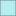

<!doctype html>
<html lang="en">
    <head>
        <meta charset="utf-8">
        <meta http-equiv="X-UA-Compatible" content="IE=edge">
        <meta name="viewport" content="initial-scale=1,user-scalable=no,maximum-scale=1,width=device-width">
        <meta name="mobile-web-app-capable" content="yes">
        <meta name="apple-mobile-web-app-capable" content="yes">
        <link rel="stylesheet" href="css/leaflet.css">
        <link rel="stylesheet" href="css/qgis2web.css"><link rel="stylesheet" href="css/fontawesome-all.min.css">
        <style>
        html, body, #map {
            width: 100%;
            height: 100%;
            padding: 0;
            margin: 0;
        }
        </style>
        <title></title>
    </head>
    <body>
        <div id="map">
        </div>
        <script src="js/qgis2web_expressions.js"></script>
        <script src="js/leaflet.js"></script>
        <script src="js/leaflet.rotatedMarker.js"></script>
        <script src="js/leaflet.pattern.js"></script>
        <script src="js/leaflet-hash.js"></script>
        <script src="js/Autolinker.min.js"></script>
        <script src="js/rbush.min.js"></script>
        <script src="js/labelgun.min.js"></script>
        <script src="js/labels.js"></script>
        <script src="data/Physiography_1.js"></script>
        <script>
        var map = L.map('map', {
            zoomControl:true, maxZoom:28, minZoom:3
        }).fitBounds([[17.429757206633553,-138.5182086604818],[83.65965269949376,-56.515891934946914]]);
        var hash = new L.Hash(map);
        map.attributionControl.setPrefix('<a href="https://github.com/tomchadwin/qgis2web" target="_blank">qgis2web</a> &middot; <a href="https://leafletjs.com" title="A JS library for interactive maps">Leaflet</a> &middot; <a href="https://qgis.org">QGIS</a>');
        var bounds_group = new L.featureGroup([]);
        function setBounds() {
        }
        var layer_OpenTopoMap_0 = L.tileLayer('https://{s}.tile.opentopomap.org/{z}/{x}/{y}.png', {
            opacity: 1.0,
            attribution: 'Map data: &copy; <a href="https://www.openstreetmap.org/copyright">OpenStreetMap</a> contributors, <a href="http://viewfinderpanoramas.org">SRTM</a> | Map style: &copy; <a href="https://opentopomap.org">OpenTopoMap</a> (<a href="https://creativecommons.org/licenses/by-sa/3.0/">CC-BY-SA</a>)',
            minZoom: 3,
            maxZoom: 28,
            minNativeZoom: 0,
            maxNativeZoom: 17
        });
        layer_OpenTopoMap_0;
        map.addLayer(layer_OpenTopoMap_0);
        function pop_Physiography_1(feature, layer) {
            var popupContent = '<table>\
                    <tr>\
                        <td colspan="2">' + (feature.properties['Name'] !== null ? Autolinker.link(feature.properties['Name'].toLocaleString(), {truncate: {length: 30, location: 'smart'}}) : '') + '</td>\
                    </tr>\
                </table>';
            layer.bindPopup(popupContent, {maxHeight: 400});
        }

        function style_Physiography_1_0(feature) {
            switch(String(feature.properties['Name'])) {
                case 'Canadian Shield':
                    return {
                pane: 'pane_Physiography_1',
                opacity: 1,
                color: 'rgba(35,35,35,0.7)',
                dashArray: '',
                lineCap: 'butt',
                lineJoin: 'miter',
                weight: 1.0, 
                fill: true,
                fillOpacity: 1,
                fillColor: 'rgba(245,52,38,0.6)',
                interactive: true,
            }
                    break;
                case 'Paleozoic Platform':
                    return {
                pane: 'pane_Physiography_1',
                opacity: 1,
                color: 'rgba(35,35,35,0.7)',
                dashArray: '',
                lineCap: 'butt',
                lineJoin: 'miter',
                weight: 1.0, 
                fill: true,
                fillOpacity: 1,
                fillColor: 'rgba(71,208,210,0.6)',
                interactive: true,
            }
                    break;
                case 'The Appalachians':
                    return {
                pane: 'pane_Physiography_1',
                opacity: 1,
                color: 'rgba(35,35,35,0.7)',
                dashArray: '',
                lineCap: 'butt',
                lineJoin: 'miter',
                weight: 1.0, 
                fill: true,
                fillOpacity: 1,
                fillColor: 'rgba(242,225,38,0.6)',
                interactive: true,
            }
                    break;
                case 'The Cordillera':
                    return {
                pane: 'pane_Physiography_1',
                opacity: 1,
                color: 'rgba(35,35,35,0.7)',
                dashArray: '',
                lineCap: 'butt',
                lineJoin: 'miter',
                weight: 1.0, 
                fill: true,
                fillOpacity: 1,
                fillColor: 'rgba(183,56,183,0.6)',
                interactive: true,
            }
                    break;
            }
        }
        map.createPane('pane_Physiography_1');
        map.getPane('pane_Physiography_1').style.zIndex = 401;
        map.getPane('pane_Physiography_1').style['mix-blend-mode'] = 'normal';
        var layer_Physiography_1 = new L.geoJson(json_Physiography_1, {
            attribution: '',
            interactive: true,
            dataVar: 'json_Physiography_1',
            layerName: 'layer_Physiography_1',
            pane: 'pane_Physiography_1',
            onEachFeature: pop_Physiography_1,
            style: style_Physiography_1_0,
        });
        bounds_group.addLayer(layer_Physiography_1);
        map.addLayer(layer_Physiography_1);
        var baseMaps = {};
        L.control.layers(baseMaps,{'Physiography<br /><table><tr><td style="text-align: center;"></td><td>Canadian Shield</td></tr><tr><td style="text-align: center;"></td><td>Paleozoic Platform</td></tr><tr><td style="text-align: center;"></td><td>The Appalachians</td></tr><tr><td style="text-align: center;"></td><td>The Cordillera</td></tr></table>': layer_Physiography_1,"OpenTopoMap": layer_OpenTopoMap_0,},{collapsed:false}).addTo(map);
        setBounds();
        </script>
    </body>
</html>
